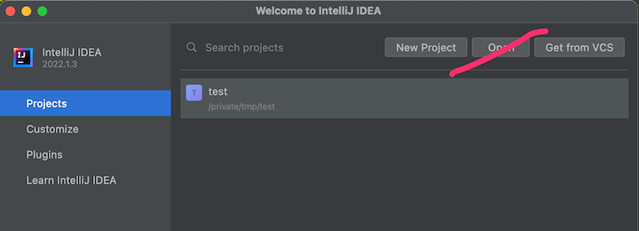
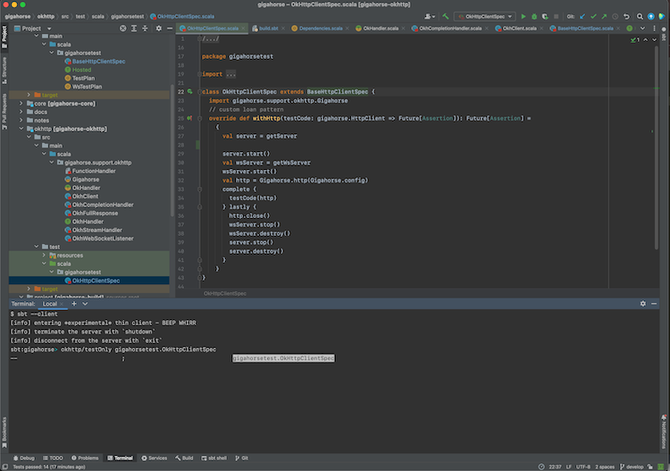

The Book of sbt (Draft)
This is a draft documentation of sbt 2.x that is yet to be released. While the general concept translates to sbt 1.x, details of both 2.x and this doc are subject to change.

sbt is a simple build tool for Scala and Java. sbt downloads your library dependencies via Coursier, incrementally compiles and tests your projects, integrates with IDEs like IntelliJ and VS Code, makes JAR packages, and publishes them to Maven Central, JVM community's package registry.
scalaVersion := "3.3.3"
You just need one line of build.sbt to get started with Scala.
Installing sbt runner
To build an sbt project, you'll need to take these steps:
- Install JDK (We recommend Eclipse Adoptium Temurin JDK 8, 11, or 17, or Zulu JDK 8 for macOS with ARM chips).
- Install sbt runner.
sbt runner is a script that invokes a declared version of sbt, downloading it beforehand if necessary. This allows build authors to precisely control the sbt version, instead of relying on users' machine environment.
Prerequisites
sbt runs on all major operating systems; however, it requires JDK 8 or higher to run.
java -version
# openjdk version "1.8.0_352"
Installing from SDKMAN
To install both JDK and sbt, consider using SDKMAN.
sdk install java $(sdk list java | grep -o "\b8\.[0-9]*\.[0-9]*\-tem" | head -1)
sdk install sbt
Universal packages
Verify the sbt runner
sbt --script-version
# 1.10.0
sbt by example
This page assumes you've installed sbt runner.
Let's start with examples rather than explaining how sbt works or why.
Create a minimum sbt build
mkdir foo-build
cd foo-build
touch build.sbt
mkdir project
echo "sbt.version=2.0.0-M2" > project/build.properties
Start sbt shell
$ sbt
[info] welcome to sbt 2.0.0-M2 (Azul Systems, Inc. Java)
....
[info] started sbt server
sbt:foo-build>
Exit sbt shell
To leave sbt shell, type exit or use Ctrl+D (Unix) or Ctrl+Z (Windows).
sbt:foo-build> exit
Compile a project
As a convention, we will use the sbt:...> or > prompt to mean that we're in the sbt interactive shell.
$ sbt
sbt:foo-build> compile
[success] elapsed time: 0 s, cache 0%, 1 onsite task
Recompile on code change
Prefixing the compile command (or any other command) with ~ causes the command to be automatically
re-executed whenever one of the source files within the project is modified. For example:
sbt:foo-build> ~compile
[success] elapsed time: 0 s, cache 100%, 1 disk cache hit
[info] 1. Monitoring source files for foo-build/compile...
[info] Press <enter> to interrupt or '?' for more options.
Create a source file
Leave the previous command running. From a different shell or in your file manager create in the foo-build
directory the following nested directories: src/main/scala/example. Then, create Hello.scala
in the example directory using your favorite editor as follows:
package example
@main def main(args: String*): Unit =
println(s"Hello ${args.mkString}")
This new file should be picked up by the running command:
[info] Build triggered by /tmp/foo-build/src/main/scala/example/Hello.scala. Running 'compile'.
[info] compiling 1 Scala source to /tmp/foo-build/target/out/jvm/scala-3.3.3/foo/backend ...
[success] elapsed time: 1 s, cache 0%, 1 onsite task
[info] 2. Monitoring source files for foo-build/compile...
[info] Press <enter> to interrupt or '?' for more options.
Press Enter to exit ~compile.
Run a previous command
From sbt shell, press up-arrow twice to find the compile command that you
executed at the beginning.
sbt:foo-build> compile
Getting help
Use the help command to get basic help about the available commands.
sbt:foo-build> help
<command> (; <command>)* Runs the provided semicolon-separated commands.
about Displays basic information about sbt and the build.
tasks Lists the tasks defined for the current project.
settings Lists the settings defined for the current project.
reload (Re)loads the current project or changes to plugins project or returns from it.
new Creates a new sbt build.
new Creates a new sbt build.
projects Lists the names of available projects or temporarily adds/removes extra builds to the session.
....
Display the description of a specific task:
sbt:foo-build> help run
Runs a main class, passing along arguments provided on the command line.
Run your app
sbt:foo> run
[info] running example.main
Hello
[success] elapsed time: 0 s, cache 50%, 1 disk cache hit, 1 onsite task
Set ThisBuild / scalaVersion from sbt shell
sbt:foo-build> set scalaVersion := "3.3.3"
[info] Defining scalaVersion
[info] The new value will be used by Compile / bspBuildTarget, Compile / dependencyTreeCrossProjectId and 51 others.
[info] Run `last` for details.
[info] Reapplying settings...
[info] set current project to foo (in build file:/tmp/foo-build/)
Check the scalaVersion setting:
sbt:foo-build> scalaVersion
[info] 3.3.3
Save the session to build.sbt
We can save the ad-hoc settings using session save.
sbt:foo-build> session save
[info] Reapplying settings...
[info] set current project to foo-build (in build file:/tmp/foo-build/)
[warn] build source files have changed
[warn] modified files:
[warn] /tmp/foo-build/build.sbt
[warn] Apply these changes by running `reload`.
[warn] Automatically reload the build when source changes are detected by setting `Global / onChangedBuildSource := ReloadOnSourceChanges`.
[warn] Disable this warning by setting `Global / onChangedBuildSource := IgnoreSourceChanges`.
build.sbt file should now contain:
scalaVersion := "3.3.3"
Name your project
Using an editor, change build.sbt as follows:
scalaVersion := "3.3.3"
organization := "com.example"
name := "Hello"
Reload the build
Use the reload command to reload the build. The command causes the
build.sbt file to be re-read, and its settings applied.
sbt:foo-build> reload
[info] welcome to sbt 2.x (Azul Systems, Inc. Java)
[info] loading project definition from /tmp/foo-build/project
[info] loading settings for project hello from build.sbt ...
[info] set current project to Hello (in build file:/tmp/foo-build/)
sbt:Hello>
Note that the prompt has now changed to sbt:Hello>.
Add toolkit-test to libraryDependencies
Using an editor, change build.sbt as follows:
scalaVersion := "3.3.3"
organization := "com.example"
name := "Hello"
libraryDependencies += "org.scala-lang" %% "toolkit-test" % "0.1.7" % Test
Use the reload command to reflect the change in build.sbt.
sbt:Hello> reload
Run incremental tests
sbt:Hello> test
Run incremental tests continuously
sbt:Hello> ~test
Write a test
Leaving the previous command running, create a file named src/test/scala/example/HelloSuite.scala
using an editor:
package example
class HelloSuite extends munit.FunSuite:
test("Hello should start with H") {
assert("hello".startsWith("H"))
}
end HelloSuite
~test should pick up the change:
example.HelloSuite:
==> X example.HelloSuite.Hello should start with H 0.012s munit.FailException: /tmp/foo-build/src/test/scala/example/HelloSuite.scala:5 assertion failed
4: test("Hello should start with H") {
5: assert("hello".startsWith("H"))
6: }
at munit.FunSuite.assert(FunSuite.scala:11)
at example.HelloSuite.$init$$$anonfun$1(HelloSuite.scala:5)
[error] Failed: Total 1, Failed 1, Errors 0, Passed 0
[error] Failed tests:
[error] example.HelloSuite
[error] (Test / testQuick) sbt.TestsFailedException: Tests unsuccessful
[error] elapsed time: 1 s, cache 50%, 3 disk cache hits, 3 onsite tasks
Make the test pass
Using an editor, change src/test/scala/example/HelloSuite.scala to:
package example
class HelloSuite extends munit.FunSuite:
test("Hello should start with H") {
assert("Hello".startsWith("H"))
}
end HelloSuite
Confirm that the test passes, then press Enter to exit the continuous test.
Add a library dependency
Using an editor, change build.sbt as follows:
scalaVersion := "3.3.3"
organization := "com.example"
name := "Hello"
libraryDependencies ++= Seq(
"org.scala-lang" %% "toolkit" % "0.1.7",
"org.scala-lang" %% "toolkit-test" % "0.1.7" % Test,
)
Use the reload command to reflect the change in build.sbt.
Use Scala REPL
We can find out the current weather in New York.
sbt:Hello> console
Welcome to Scala 3.3.3 (1.8.0_402, Java OpenJDK 64-Bit Server VM).
Type in expressions for evaluation. Or try :help.
scala>
import sttp.client4.quick.*
import sttp.client4.Response
val newYorkLatitude: Double = 40.7143
val newYorkLongitude: Double = -74.006
val response: Response[String] = quickRequest
.get(
uri"https://api.open-meteo.com/v1/forecast?latitude=\$newYorkLatitude&longitude=\$newYorkLongitude¤t_weather=true"
)
.send()
println(ujson.read(response.body).render(indent = 2))
// press Ctrl+D
// Exiting paste mode, now interpreting.
{
"latitude": 40.710335,
"longitude": -73.99307,
"generationtime_ms": 0.36704540252685547,
"utc_offset_seconds": 0,
"timezone": "GMT",
"timezone_abbreviation": "GMT",
"elevation": 51,
"current_weather": {
"temperature": 21.3,
"windspeed": 16.7,
"winddirection": 205,
"weathercode": 3,
"is_day": 1,
"time": "2023-08-04T10:00"
}
}
import sttp.client4.quick._
import sttp.client4.Response
val newYorkLatitude: Double = 40.7143
val newYorkLongitude: Double = -74.006
val response: sttp.client4.Response[String] = Response({"latitude":40.710335,"longitude":-73.99307,"generationtime_ms":0.36704540252685547,"utc_offset_seconds":0,"timezone":"GMT","timezone_abbreviation":"GMT","elevation":51.0,"current_weather":{"temperature":21.3,"windspeed":16.7,"winddirection":205.0,"weathercode":3,"is_day":1,"time":"2023-08-04T10:00"}},200,,List(:status: 200, content-encoding: deflate, content-type: application/json; charset=utf-8, date: Fri, 04 Aug 2023 10:09:11 GMT),List(),RequestMetadata(GET,https://api.open-meteo.com/v1/forecast?latitude=40.7143&longitude...
scala> :q // to quit
Make a subproject
Change build.sbt as follows:
scalaVersion := "3.3.3"
organization := "com.example"
lazy val hello = project
.in(file("."))
.settings(
name := "Hello",
libraryDependencies ++= Seq(
"org.scala-lang" %% "toolkit" % "0.1.7",
"org.scala-lang" %% "toolkit-test" % "0.1.7" % Test
)
)
lazy val helloCore = project
.in(file("core"))
.settings(
name := "Hello Core"
)
Use the reload command to reflect the change in build.sbt.
List all subprojects
sbt:Hello> projects
[info] In file:/tmp/foo-build/
[info] * hello
[info] helloCore
Compile the subproject
sbt:Hello> helloCore/compile
Add toolkit-test to the subproject
Change build.sbt as follows:
scalaVersion := "3.3.3"
organization := "com.example"
val toolkitTest = "org.scala-lang" %% "toolkit-test" % "0.1.7"
lazy val hello = project
.in(file("."))
.settings(
name := "Hello",
libraryDependencies ++= Seq(
"org.scala-lang" %% "toolkit" % "0.1.7",
toolkitTest % Test
)
)
lazy val helloCore = project
.in(file("core"))
.settings(
name := "Hello Core",
libraryDependencies += toolkitTest % Test
)
Broadcast commands
Set aggregate so that the command sent to hello is broadcast to helloCore too:
scalaVersion := "3.3.3"
organization := "com.example"
val toolkitTest = "org.scala-lang" %% "toolkit-test" % "0.1.7"
lazy val hello = project
.in(file("."))
.aggregate(helloCore)
.settings(
name := "Hello",
libraryDependencies ++= Seq(
"org.scala-lang" %% "toolkit" % "0.1.7",
toolkitTest % Test
)
)
lazy val helloCore = project
.in(file("core"))
.settings(
name := "Hello Core",
libraryDependencies += toolkitTest % Test
)
After reload, ~test now runs on both subprojects:
sbt:Hello> ~test
Press Enter to exit the continuous test.
Make hello depend on helloCore
Use .dependsOn(...) to add a dependency on other subprojects. Also let's move the toolkit dependency to helloCore.
scalaVersion := "3.3.3"
organization := "com.example"
val toolkitTest = "org.scala-lang" %% "toolkit-test" % "0.1.7"
lazy val hello = project
.in(file("."))
.aggregate(helloCore)
.dependsOn(helloCore)
.settings(
name := "Hello",
libraryDependencies += toolkitTest % Test
)
lazy val helloCore = project
.in(file("core"))
.settings(
name := "Hello Core",
libraryDependencies += "org.scala-lang" %% "toolkit" % "0.1.7",
libraryDependencies += toolkitTest % Test
)
Parse JSON using uJson
Let's use uJson from the toolkit in helloCore.
Add core/src/main/scala/example/core/Weather.scala:
package example.core
import sttp.client4.quick._
import sttp.client4.Response
object Weather:
def temp() =
val response: Response[String] = quickRequest
.get(
uri"https://api.open-meteo.com/v1/forecast?latitude=40.7143&longitude=-74.006¤t_weather=true"
)
.send()
val json = ujson.read(response.body)
json.obj("current_weather")("temperature").num
end Weather
Next, change src/main/scala/example/Hello.scala as follows:
package example
import example.core.Weather
@main def main(args: String*): Unit =
val temp = Weather.temp()
println(s"Hello! The current temperature in New York is $temp C.")
Let's run the app to see if it worked:
sbt:Hello> run
[info] compiling 1 Scala source to /tmp/foo-build/core/target/scala-2.13/classes ...
[info] compiling 1 Scala source to /tmp/foo-build/target/scala-2.13/classes ...
[info] running example.Hello
Hello! The current temperature in New York is 22.7 C.
Switch scalaVersion temporarily
sbt:Hello> ++3.3.3!
[info] Forcing Scala version to 3.3.3 on all projects.
[info] Reapplying settings...
[info] Set current project to Hello (in build file:/tmp/foo-build/)
Check the scalaVersion setting:
sbt:Hello> scalaVersion
[info] helloCore / scalaVersion
[info] 3.3.3
[info] scalaVersion
[info] 3.3.3
This setting will go away after reload.
Batch mode
You can also run sbt in batch mode, passing sbt commands directly from the terminal.
$ sbt clean "testOnly HelloSuite"
Note: Running in batch mode requires JVM spinup and JIT each time,
so your build will run much slower.
For day-to-day coding, we recommend using the sbt shell
or a continuous test like ~test.
sbt new command
You can use the sbt new command to quickly setup a simple "Hello world" build.
$ sbt new scala/scala-seed.g8
....
A minimal Scala project.
name [My Something Project]: hello
Template applied in ./hello
When prompted for the project name, type hello.
This will create a new project under a directory named hello.
Credits
This page is based on the Essential sbt tutorial written by William "Scala William" Narmontas.
Getting Started with sbt
sbt uses a small number of concepts to support flexible and powerful build definitions. There are not that many concepts, but sbt is not exactly like other build systems and there are details you will stumble on if you haven't read the documentation.
The Getting Started Guide covers the concepts you need to know to create and maintain an sbt build definition.
It is highly recommended to read the Getting Started Guide!
Why sbt exists
Preliminaries
In Scala, a library or a program is compiled using the Scala compiler, scalac, as documented in the Scala 3 Book:
@main def hello() = println("Hello, World!")
$ scalac hello.scala
$ scala hello
Hello, World!
This process gets tedious and slow if we were to invoke scalac directly since we'd have to pass all the Scala source file names.
Furthermore, most non-trivial programs will likely have library dependencies, and will therefore also depend transitively on their dependencies. This is doubly complicated for Scala ecosystem because we have Scala 2.12, 2.13 ecosystem, Scala 3.x ecosystem, JVM, JS, and Native platforms.
Rather than working with JAR files and scalac, we can avoid manual toil by introducing a higher-level subproject abstraction and by using a build tool.
sbt
sbt is a simple build tool created for Scala and Java. It lets us declare subprojects and their various dependencies and custom tasks to ensure that we'll always get a fast, repeatable build.
To accomplish this goal, sbt does several things:
- The version of sbt itself is tracked in
project/build.properties. - Defines a domain-specific language (DSL) called build.sbt DSL that can declare the Scala version and other subproject information in
build.sbt. - Uses Coursier to fetch subprojects dependencies and their dependencies.
- Invokes Zinc to incrementally compile Scala and Java sources.
- Automatically runs tasks in parallel whenever possible.
- Defines conventions on how packages are published to Maven repositories to interoperate with the wider JVM ecosystem.
To a large extent, sbt standardizes the commands needed to build a given program or library.
Why build.sbt DSL?
build.sbt DSL makes sbt a unique build tool,
as opposed to other tools that use configuration file formats like YAML, TOML, and XML.
Originally developed beween 2010 and 2013, build.sbt can start almost like a YAML file, declaring just scalaVersion and libraryDependencies,
but it can supports more features to keep the build definition organized as the build grows larger:
- To avoid repeating the same information, like the version number for a library,
build.sbtcan declare variables usingval. - Uses Scala language constructs like
ifto define settings and tasks, when needed. - Statically typed settings and tasks, to catch typos and type errors before the build starts. The type also helps passing data from one task from another.
- Provides structured concurrency via
Initialized[Task[A]]. The DSL uses direct style.valuesyntax to concisely define task graphs. - Enpowers the community to extend sbt with plugins that provide custom tasks or language extensions like Scala.JS.
Creating a new build
To start a new build with sbt, use sbt new.
$ mkdir /tmp/foo
$ cd /tmp/foo
$ sbt new
Welcome to sbt new!
Here are some templates to get started:
a) scala/toolkit.local - Scala Toolkit (beta) by Scala Center and VirtusLab
b) typelevel/toolkit.local - Toolkit to start building Typelevel apps
c) sbt/cross-platform.local - A cross-JVM/JS/Native project
d) scala/scala3.g8 - Scala 3 seed template
e) scala/scala-seed.g8 - Scala 2 seed template
f) playframework/play-scala-seed.g8 - A Play project in Scala
g) playframework/play-java-seed.g8 - A Play project in Java
i) softwaremill/tapir.g8 - A tapir project using Netty
m) scala-js/vite.g8 - A Scala.JS + Vite project
n) holdenk/sparkProjectTemplate.g8 - A Scala Spark project
o) spotify/scio.g8 - A Scio project
p) disneystreaming/smithy4s.g8 - A Smithy4s project
q) quit
Select a template:
If you select "a", you will be prompted by more questions:
Select a template: a
Scala version (default: 3.3.0):
Scala Toolkit version (default: 0.2.0):
Hit return key to select the default values.
[info] Updated file /private/tmp/bar/project/build.properties: set sbt.version to 1.9.8
[info] welcome to sbt 1.9.8 (Azul Systems, Inc. Java 1.8.0_352)
....
[info] set current project to bar (in build file:/private/tmp/foo/)
[info] sbt server started at local:///Users/eed3si9n/.sbt/1.0/server/d0ac1409c0117a949d47/sock
[info] started sbt server
sbt:bar> exit
[info] shutting down sbt server
Here are the files that are created by this template:
.
├── build.sbt
├── project
│ └── build.properties
├── src
│ ├── main
│ │ └── scala
│ │ └── example
│ │ └── Main.scala
│ └── test
│ └── scala
│ └── example
│ └── ExampleSuite.scala
└── target
Let's take a look at the build.sbt file:
val toolkitV = "0.2.0"
val toolkit = "org.scala-lang" %% "toolkit" % toolkitV
val toolkitTest = "org.scala-lang" %% "toolkit-test" % toolkitV
scalaVersion := "3.3.0"
libraryDependencies += toolkit
libraryDependencies += (toolkitTest % Test)
This is called a build definition, and it contains the information sbt needs to compile your project. This is written in .sbt format, a subset of Scala language.
Here's what's in src/main/scala/example/Main.scala:
package example
@main def main(args: String*): Unit =
println(s"Hello ${args.mkString}")
This is a Hello world template. We can run it from the sbt shell by starting sbt --client and typing run <your_name> inside the shell:
$ sbt --client
[info] entering *experimental* thin client - BEEP WHIRR
[info] server was not detected. starting an instance
....
info] terminate the server with `shutdown`
[info] disconnect from the server with `exit`
sbt:bar> run Raj
[info] running example.main Raj
Hello Raj
[success] Total time: 0 s, completed Feb 18, 2024 2:38:10 PM
Giter8 templates
In addition to a few .local templates, sbt new integrates with Giter8,
and open templating system that uses GitHub to host templates. For example, scala/scala3.g8 is maintained by the Scala team to create a new Scala 3 build:
$ /tmp
$ sbt new scala/scala3.g8
Giter8 wiki lists over 100 templates that can jump start your new build.
sbt components
sbt runner
An sbt build is executed using sbt runner, also called "sbt-the-shell-script" to distinguish from other components. It's important to note is that sbt runner is designed to run any version of sbt.
Specifying sbt version with project/build.properties
sbt runner executes a subcomponent called sbt launcher, which reads project/build.properties to determine the sbt version for the build, and downloads the artifacts if they haven't been cached:
sbt.version=2.0.0-M2
This means that:
- Anyone who checkouts your build would get the same sbt version, regardless of sbt runner they may have installed on their machines.
- The change of sbt version can be tracked in a version control system, like git.
sbtn (sbt --client)
sbtn (native thin client) is a subcomponent of sbt runner, called when you pass --client flag to sbt runner, and is used to send commands to sbt server. It is called sbtn because it is compiled to native code using GraalVM native-image. The protocol between sbtn and sbt server is stable enough that it should work between most recent versions of sbt.
sbt server
sbt server is the actual build tool whose version is specified using project/build.properties. sbt server acts as a cashier to take commands from sbtn and editors.
Coursier
sbt server runs Couriser as a subcomponent to resolve Scala library, Scala compiler, and any other library dependencies your build needs.
Zinc
Zinc is the incremental compiler for Scala, developed and maintained by sbt project.
An often overlooked aspect of Zinc is that Zinc provides a stable API to invoke any modern versions of Scala compiler. Combined with the fact that Coursier can resolve any Scala version, with sbt we can invoke any modern versions of Scala just by writing a single line build.sbt:
scalaVersion := "3.3.3"
BSP server
sbt server supports Build Server Protocol (BSP) to list build targets, build them, etc. This allows IDEs like IntelliJ and Metals to communicate with a running sbt server programmatically.
Connecting to sbt server
Let's look at three ways of connecting to sbt server.
sbt shell using sbtn
Run sbt --client in the working directory of your build:
sbt --client
This should display something like the following:
$ sbt --client
[info] server was not detected. starting an instance
[info] welcome to sbt 2.0.0-alpha7 (Azul Systems, Inc. Java 1.8.0_352)
[info] loading project definition from /private/tmp/bar/project
[info] loading settings for project bar from build.sbt ...
[info] set current project to bar (in build file:/private/tmp/bar/)
[info] sbt server started at local:///Users/eed3si9n/.sbt/2.0.0-alpha7/server/d0ac1409c0117a949d47/sock
[info] started sbt server
[info] terminate the server with `shutdown`
[info] disconnect from the server with `exit`
sbt:bar>
Running sbt with no command line arguments starts sbt shell. sbt shell has a command prompt (with tab completion and history!).
For example, you could type compile at the sbt shell:
sbt:bar> compile
To compile again, press up arrow and then enter.
To leave sbt shell, type exit or use Ctrl-D (Unix) or Ctrl-Z (Windows).
Batch mode using sbtn
You can also run sbt in batch mode:
sbt --client compile
sbt --client testOnly TestA
$ sbt --client compile
> compile
Shutting down sbt server
Run the following to shutdown all sbt servers on your machine:
sbt shutdownall
Or the following to shutdown just the current one:
sbt --client shutdown
Basic tasks
This page describes how to use sbt once you have set up your project. This page assumes you've read sbt components.
If you pull a repository that uses sbt, it's fairly easy to get started. First, get the package from GitHub, or some other repository.
$ git clone https://github.com/scalanlp/breeze.git
$ cd breeze
sbt shell with sbtn
As mentioned in sbt components, start an sbt shell:
$ sbt --client
This should display something like the following:
$ sbt --client
[info] entering *experimental* thin client - BEEP WHIRR
[info] server was not detected. starting an instance
[info] welcome to sbt 1.5.5 (Azul Systems, Inc. Java 1.8.0_352)
[info] loading global plugins from /Users/eed3si9n/.sbt/1.0/plugins
[info] loading settings for project breeze-build from plugins.sbt ...
[info] loading project definition from /private/tmp/breeze/project
Downloading https://repo1.maven.org/maven2/org/scalanlp/sbt-breeze-expand-codegen_2.12_1.0/0.2.1/sbt-breeze-expand-codegen-0.2.1.pom
....
[info] sbt server started at local:///Users/eed3si9n/.sbt/1.0/server/dd982e07e85c7de1b618/sock
[info] terminate the server with `shutdown`
[info] disconnect from the server with `exit`
sbt:breeze-parent>
projects command
Let's explore the build by listing out the subprojects with projects command:
sbt:breeze-parent> projects
[info] In file:/private/tmp/breeze/
[info] benchmark
[info] macros
[info] math
[info] natives
[info] * root
[info] viz
This shows that this build has 6 subprojects, including the current subproject called root.
tasks command
Similarly, we can list the tasks availble to this build using tasks command:
sbt:breeze-parent> tasks
This is a list of tasks defined for the current project.
It does not list the scopes the tasks are defined in; use the 'inspect' command for that.
Tasks produce values. Use the 'show' command to run the task and print the resulting value.
bgRun Start an application's default main class as a background job
bgRunMain Start a provided main class as a background job
clean Deletes files produced by the build, such as generated sources, compiled classes, and task caches.
compile Compiles sources.
console Starts the Scala interpreter with the project classes on the classpath.
consoleProject Starts the Scala interpreter with the sbt and the build definition on the classpath and useful imports.
consoleQuick Starts the Scala interpreter with the project dependencies on the classpath.
copyResources Copies resources to the output directory.
doc Generates API documentation.
package Produces the main artifact, such as a binary jar. This is typically an alias for the task that actually does the packaging.
packageBin Produces a main artifact, such as a binary jar.
packageDoc Produces a documentation artifact, such as a jar containing API documentation.
packageSrc Produces a source artifact, such as a jar containing sources and resources.
publish Publishes artifacts to a repository.
publishLocal Publishes artifacts to the local Ivy repository.
publishM2 Publishes artifacts to the local Maven repository.
run Runs a main class, passing along arguments provided on the command line.
runMain Runs the main class selected by the first argument, passing the remaining arguments to the main method.
test Executes all tests.
testOnly Executes the tests provided as arguments or all tests if no arguments are provided.
testQuick Executes the tests that either failed before, were not run or whose transitive dependencies changed, among those provided as arguments.
update Resolves and optionally retrieves dependencies, producing a report.
More tasks may be viewed by increasing verbosity. See 'help tasks'
compile
The compile tasks compiles the sources, after resolving and downloading the library dependendies.
> compile
This should display something like the following:
sbt:breeze-parent> compile
[info] compiling 341 Scala sources and 1 Java source to /private/tmp/breeze/math/target/scala-3.1.3/classes ...
| => math / Compile / compileIncremental 51s
run
The run task runs the main class for the subproject.
In the sbt shell, type math/run:
> math/run
math/run means run task, scoped to math subproject.
This should display something like the following:
sbt:breeze-parent> math/run
[info] Scala version: 3.1.3 true
....
Multiple main classes detected. Select one to run:
[1] breeze.optimize.linear.NNLS
[2] breeze.optimize.proximal.NonlinearMinimizer
[3] breeze.optimize.proximal.QuadraticMinimizer
[4] breeze.util.UpdateSerializedObjects
Enter number:
Enter 1 at the prompt.
testQuick
The testQuick task tests either the tests that failed before, were not run, or whose transitive dependencies changed.
> math/testQuick
This should display something like the following:
sbt:breeze-parent> math/testQuick
[info] FeatureVectorTest:
[info] - axpy fv dv (1 second, 106 milliseconds)
[info] - axpy fv vb (9 milliseconds)
[info] - DM mult (19 milliseconds)
[info] - CSC mult (32 milliseconds)
[info] - DM trans mult (4 milliseconds)
....
[info] Run completed in 58 seconds, 183 milliseconds.
[info] Total number of tests run: 1285
[info] Suites: completed 168, aborted 0
[info] Tests: succeeded 1285, failed 0, canceled 0, ignored 0, pending 0
[info] All tests passed.
[success] Total time: 130 s (02:10), completed Feb 19, 2024
Watch (tilde) command
To speed up your edit-compile-test cycle, you can ask sbt to automatically recompile or run tests whenever you save a source file.
Make a command run when one or more source files change by prefixing the
command with ~. For example, in sbt shell try:
> ~testQuick
Press enter to stop watching for changes.
You can use the ~ prefix with either sbt shell or batch mode.
Build definition basics
This page discusses the build.sbt build definition.
What is a build definition?
A build definition is defined in build.sbt,
and it consists of a set of projects (of type Project).
Because the term project can be ambiguous,
we often call it a subproject in this guide.
For instance, in build.sbt you define
the subproject located in the current directory like this:
scalaVersion := "3.3.3"
name := "Hello"
or more explicitly:
lazy val root = (project in file("."))
.settings(
scalaVersion := "3.3.3",
name := "Hello",
)
Each subproject is configured by key-value pairs.
For example, one key is name and it maps to a string value, the name of
your subproject.
The key-value pairs are listed under the .settings(...) method.
build.sbt DSL
build.sbt defines subprojects using a DSL called build.sbt DSL, which is based on Scala.
Initially you can use build.sbt DSL, like a YAML file, declaring just scalaVersion and libraryDependencies,
but it can supports more features to keep the build definition organized as the build grows larger.
Typed setting expression
Let's take a closer look at the build.sbt DSL:
organization := "com.example"
^^^^^^^^^^^^ ^^^^^^^^ ^^^^^^^^^^^^^
key operator (setting/task) body
Each entry is called a setting expression. Some among them are also called task expressions. We will see more on the difference later in this page.
A setting expression consists of three parts:
- Left-hand side is a key.
- Operator, which in this case is
:= - Right-hand side is called the body, or the setting/task body.
On the left-hand side, name, version, and scalaVersion are keys.
A key is an instance of
SettingKey[A],
TaskKey[A], or
InputKey[A] where A is the
expected value type.
Because key name is typed to SettingKey[String],
the := operator on name is also typed specifically to String.
If you use the wrong value type, the build definition will not compile:
name := 42 // will not compile
vals and lazy vals
To avoid repeating the same information, like the version number for a library,
build.sbt may be interspersed with vals, lazy vals, and defs.
val toolkitV = "0.2.0"
val toolkit = "org.scala-lang" %% "toolkit" % toolkitV
val toolkitTest = "org.scala-lang" %% "toolkit-test" % toolkitV
scalaVersion := "3.3.3"
libraryDependencies += toolkit
libraryDependencies += (toolkitTest % Test)
In the above, val defines a variable, which are initialized from the top to bottom.
This means that toolkitV must be defined before it is referenced.
Here's a bad example:
// bad example
val toolkit = "org.scala-lang" %% "toolkit" % toolkitV // uninitialized reference!
val toolkitTest = "org.scala-lang" %% "toolkit-test" % toolkitV // uninitialized reference!
val toolkitV = "0.2.0"
sbt will fail to load with java.lang.ExceptionInInitializerError cased by a NullPointerException if your build.sbt contains an uninitialized forward reference.
One way to let the compiler fix this is to define the variables as lazy:
lazy val toolkit = "org.scala-lang" %% "toolkit" % toolkitV
lazy val toolkitTest = "org.scala-lang" %% "toolkit-test" % toolkitV
lazy val toolkitV = "0.2.0"
Some frown upon gratuitous lazy vals, but Scala 3 lazy vals are efficient,
and we think it makes the build definition more robust for copy-pasting.
Top-level objects and classes are not allowed in build.sbt.
Those should go in the project/ directory as Scala source files.
Library dependency basics
This page explains the basics of library dependency management using sbt.
sbt uses Coursier to implement managed dependencies, so if you're familiar with package managers like Coursier, npm, PIP, etc you won't have much trouble.
The libraryDependencies key
Declaring a dependency looks like this, where groupId, artifactId, and
revision are strings:
libraryDependencies += groupID % artifactID % revision
or like this, where configuration can be a string or a Configuration value (such as Test):
libraryDependencies += groupID % artifactID % revision % configuration
When you run:
> compile
sbt will automatically resolve the dependencies and download the JAR files.
Getting the right Scala version with %%
If you use organization %% moduleName % version rather than
organization % moduleName % version (the difference is the double %% after
the organization), sbt will add your project's binary Scala version to the artifact
name. This is just a shortcut. You could write this without the %%:
libraryDependencies += "org.scala-lang" % "toolkit_3" % "0.2.0"
Assuming the scalaVersion for your build is 3.x, the following is
identical (note the double %% after "toolkit"):
libraryDependencies += "org.scala-lang" %% "toolkit" % "0.2.0"
The idea is that many dependencies are compiled for multiple Scala versions, and you'd like to get the one that matches your project to ensure binary compatibility.
Tracking dependencies in one place
.scala files under project becomes part of the build definition,
which we can use to track dependencies in one place by
creating a file named project/Dependencies.scala.
// place this file at project/Dependencies.scala
import sbt.*
object Dependencies:
// versions
lazy val toolkitV = "0.2.0"
// libraries
val toolkit = "org.scala-lang" %% "toolkit" % toolkitV
val toolkitTest = "org.scala-lang" %% "toolkit-test" % toolkitV
end Dependencies
The Dependencies object will be available in build.sbt.
To make it easier to use the vals defined in it, import Dependencies.* in your build.sbt file.
import Dependencies.*
scalaVersion := "3.3.3"
name := "something"
libraryDependencies += toolkit
libraryDependencies += toolkitTest % Test
Viewing library dependencies
Type in Compile/dependencyTree in the sbt shell to show the library dependency tree, including the transitive dependencies:
> Compile/dependencyTree
This should display something like the following:
sbt:bar> Compile/dependencyTree
[info] default:bar_3:0.1.0-SNAPSHOT
[info] +-org.scala-lang:scala3-library_3:3.3.1 [S]
[info] +-org.scala-lang:toolkit_3:0.2.0
[info] +-com.lihaoyi:os-lib_3:0.9.1
[info] | +-com.lihaoyi:geny_3:1.0.0
[info] | | +-org.scala-lang:scala3-library_3:3.1.3 (evicted by: 3.3.1)
[info] | | +-org.scala-lang:scala3-library_3:3.3.1 [S]
....
Multi project basics
While a simple program can start out as a single-project build, it's more common for a build to split into smaller, multiple subprojects.
Each subproject in a build has its own source directories, generates
its own JAR file when you run packageBin, and in general works like any
other project.
A project is defined by declaring a lazy val of type Project. For example, :
scalaVersion := "3.3.3"
lazy val core = (project in file("core"))
.settings(
name := "core",
)
lazy val util = (project in file("util"))
.dependsOn(core)
.settings(
name := "util",
)
The name of the val is used as the subproject's ID, which is used to refer to the subproject at the sbt shell.
Build layout
sbt uses conventions for file placement to make it easy to dive into a new sbt build:
.
├── build.sbt
├── project/
│ ├── build.properties
│ ├── Dependencies.scala
│ └── plugins.sbt
├── src/
│ ├── main/
│ │ ├── java/
│ │ ├── resources/
│ │ ├── scala/
│ │ └── scala-2.13/
│ └── test/
│ ├── java/
│ ├── resources/
│ ├── scala/
│ └── scala-2.13/
├── subproject-core/
│ └── src/
│ ├── main/
│ └── test/
├─── subproject-util/
│ └── src/
│ ├── main/
│ └── test/
└── target/
- The local root directory
.is the starting point of your build. - In sbt's terminology, the base directory is the directory containing the subproject. In the above,
.,subproject-core, andsubproject-utilare base directories. - The build definition is described in
build.sbt(actually any files named*.sbt) in the local root directory. - The sbt version is tracked in
project/build.properties. - Generated files (compiled classes, packaged jars, managed files, caches,
and documentation) will be written to the
targetdirectory by default.
Build support files
In addition to build.sbt, project directory can contain .scala files
that define helper objects and one-off plugins.
See organizing the build for more.
.
├── build.sbt
├── project/
│ ├── build.properties
│ ├── Dependencies.scala
│ └── plugins.sbt
....
You may see .sbt files inside project/ but they are not equivalent to
.sbt files in the project's base directory. Explaining this will
come later, since you'll need some background information first.
Source code
sbt uses the same directory structure as Maven for source files by default (all paths are relative to the base directory):
....
├── src/
│ ├── main/
│ │ ├── java/ <main Java sources>
│ │ ├── resources/ <files to include in main JAR>
│ │ ├── scala/ <main Scala sources>
│ │ └── scala-2.13/ <main Scala 2.13 specific sources>
│ └── test/
│ ├── java/ <test Java sources>
│ ├── resources/ <files to include in test JAR>
│ ├── scala/ <test Scala sources>
│ └── scala-2.13/ <test Scala 2.13 specific sources>
....
Other directories in src/ will be ignored. Additionally, all hidden
directories will be ignored.
Source code can be placed in the project's base directory as
hello/app.scala, which may be OK for small projects,
though for normal projects people tend to keep the projects in
the src/main/ directory to keep things neat.
The fact that you can place *.scala source code in the base directory might seem like
an odd trick, but this fact becomes relevant later.
Configuring version control
Your .gitignore (or equivalent for other version control systems) should
contain:
target/
Note that this deliberately has a trailing / (to match only directories)
and it deliberately has no leading / (to match project/target/ in
addition to plain target/).
sbt automates building, testing, and deployment of your subprojects from information in the build definition.
sbt with IDEs
While it's possible to code Scala with just an editor and sbt, most programmers today use an Integrated Development Environment, or IDE for short. Two of the popular IDEs in Scala are Metals and IntelliJ IDEA, and they both integrate with sbt builds.
A few of the advantages of using the IDEs are:
- Jump to definition
- Code completion based on static types
- Listing compilation errors, and jumping to the error positions
- Interactive debugging
Here are a few recipes on how to configure the IDEs to integrate with sbt:
Changes
sbt 2.0 changes (draft)
This is a draft documentation of sbt 2.x that is yet to be released. While the general concept translates to sbt 1.x, details of both 2.x and this doc are subject to change.
Changes with compatibility implications
See also Migrating from sbt 1.x.
- sbt 2.x uses Scala 3.x for build definitions and plugins (Both sbt 1.x and 2.x are capable of building Scala 2.x and 3.x) by @eed3si9n, @adpi2, and others.
- Bare settings are added to all subprojects, as opposed to just the root subproject, and thus replacing the role that
ThisBuildhas played. testtask is changed to be incremental test that can cache test results. UsetestFullfor full test by @eed3si9n in #7686- sbt 2.x plugins are published with
_sbt2_3suffix by @eed3si9n in #7671 - sbt 2.x adds
platformsetting soModuleID's%%operator can cross build on JVM as well as JS and Native, as opposed to%%%operator that was created in a plugin to workaround this issue, by @eed3si9n in #6746 - Dropped
useCoursiersetting so Coursier cannot be opted out, by @eed3si9n in #7712 Key.Classpathis changed to be an alias of theSeq[Attributed[xsbti.HashedVirtualFileRef]]type, instead ofSeq[Attributed[File]]. Similarly, some task keys that used to returnFilehave changed to returnHashedVirtualFileRefinstead. See Caching Files.
Dropped dreprecations
Features
- Project matrix, which was available via plugin in sbt 1.x, is in-sourced.
- sbt 2.x extends the unified slash syntax to support query of subprojects. Details below.
- Local/remote cache system. Details below
Common settings
In sbt 2.x, the bare settings in build.sbt are interpreted to be common settings, and are injected to all subprojects. This means we can now set scalaVersion without using ThisBuild scoping:
scalaVersion := "3.3.3"
This also fixes the so-called dynamic dispatch problem:
lazy val hi = taskKey[String]("")
hi := name.value + "!"
In sbt 1.x hi task will capture the name of the root project, but in sbt 2.x it will return the name of each subproject with !:
$ export SBT_NATIVE_CLIENT=true
$ sbt show hi
[info] entering *experimental* thin client - BEEP WHIRR
[info] terminate the server with `shutdown`
> show hi
[info] foo / hi
[info] foo!
[info] hi
[info] root!
Contributed by @eed3si9n in #6746
sbt query
To filter down the subprojects, sbt 2.x introduces sbt query.
$ export SBT_NATIVE_CLIENT=true
$ sbt foo.../test
The above runs all subprojects that begins with foo.
$ sbt ...@scalaBinaryVersion=3/test
The above runs all subprojects whose scalaBinaryVersion is 3. Contributed by @eed3si9n in #7699
Local/remote cache system
sbt 2.x implements cached task, which can automatically cache the task results to local disk and Bazel-compatible remote cache.
lazy val task1 = taskKey[String]("doc for task1")
task1 := (Def.cachedTask {
name.value + version.value + "!"
}).value
This tracks the inputs into the task1 and creates a machine-wide disk cache, which can also be configured to also use a remote cache. Since it's common for sbt tasks to also produce files on the side, we also provide a mechanism to cache file contents:
lazy val task1 = taskKey[String]("doc for task1")
task1 := (Def.cachedTask {
val converter = fileConverter.value
....
val output = converter.toVirtualFile(somefile)
Def.declareOutput(output)
name.value + version.value + "!"
}).value
Contributed by @eed3si9n in #7464 / #7525
Previously on sbt
See also:
Migrating from sbt 1.x
Changing build.sbt DSL to Scala 3.x
As a reminder, users can build either Scala 2.x or Scala 3.x programs using either sbt 1.x or sbt 2.x. However, the Scala that underlies the build.sbt DSL is determined by the sbt version. In sbt 2.0, we are migrating to Scala 3.x.
This means that if you implement custom tasks or sbt plugins for sbt 2.x, it must be done using Scala 3.x. See Scala 3.x incompatibility table and Scala 2 with -Xsource:3.
// This works on Scala 2.12.20 under -Xsource:3
import sbt.{ given, * }
Bare settings changes
version := "0.1.0"
scalaVersion := "3.3.3"
Bare settings, like the example above, are settings written directly in build.sbt without settings(...).
In sbt 1.x bare settings were project settings that applied only to the root subproject. In sbt 2.x, the bare settings in build.sbt are common settings that are injected to all subprojects.
name := "root" // every subprojects will be named root!
publish / skip := true
Migrating ThisBuild
In sbt 2.x, bare settings settings should no longer be scoped to ThisBuild. One benefit of the new common settings over ThisBuild is that it would act in a more predictable delegation. These settings are inserted between plugins settings and those defined in settings(...), meaning they can be used to define settings like Compile / scalacOptions, which was not possible with ThisBuild.
Migrating to slash syntax
sbt 1.x supported both the sbt 0.13 style syntax and the slash syntax. sbt 2.x removes the support for the sbt 0.13 syntax, so use the slash syntax for both sbt shell and in build.sbt:
<project-id> / Config / intask / key
For example, test:compile will no longer work on the shell. Use Test/compile instead. See syntactic Scalafix rule for unified slash syntax for semi-automated migration of build.sbt files.
Cross building sbt plugins
In sbt 2.x, if you cross build an sbt plugin with Scala 3.x and 2.12.x, it will automatically cross build against sbt 1.x and sbt 2.x:
// using sbt 2.x
lazy val plugin = (projectMatrix in file("plugin"))
.enablePlugins(SbtPlugin)
.settings(
name := "sbt-vimquit",
)
.jvmPlatform(scalaVersions = Seq("3.3.3", "2.12.20"))
If you use projectMatrix, make sure to move the plugin to a subdirectory like plugin/. Otherwise, the synthetic root project will also pick up the src/.
Cross building sbt plugin with sbt 1.x
Use sbt 1.10.2 or later, if you want to cross build using sbt 1.x.
// using sbt 1.x
lazy val scala212 = "2.12.20"
lazy val scala3 = "3.3.4"
ThisBuild / crossScalaVersions := Seq(scala212, scala3)
lazy val plugin = (project in file("plugin"))
.enablePlugins(SbtPlugin)
.settings(
name := "sbt-vimquit",
(pluginCrossBuild / sbtVersion) := {
scalaBinaryVersion.value match {
case "2.12" => "1.5.8"
case _ => "2.0.0-M2"
}
},
)
Changes to %%
In sbt 2.x, ModuleID's %% operator has become platform-aware. For JVM subprojects, %% works as before, encoding Scala suffix (for example _3) on Maven repositories.
Migrating %%% operator
When Scala.JS or Scala Native becomes available on sbt 2.x, %% will encode both the Scala version (such as _3) and the platform suffix (_sjs1 etc). As a result, %%% can be replaced with %%:
libraryDependencies += "org.scala-js" %% "scalajs-dom" % "2.8.0"
Use .platform(Platform.jvm) in case where JVM libraries are needed.
The PluginCompat technique
To use the same *.scala source but target both sbt 1.x and 2.x, we can create a shim, for example an object named PluginCompat in both src/main/scala-2.12/ and src/main/scala-3/.
Migrating Classpath type
sbt 2.x changed the Classpath type to be an alias of the Seq[Attributed[xsbti.HashedVirtualFileRef]] type. The following is a shim created to work with classpaths from both sbt 1.x and 2.x.
// src/main/scala-3/PluginCompat.scala
package sbtfoo
import java.nio.file.{ Path => NioPath }
import sbt.*
import xsbti.{ FileConverter, HashedVirtualFileRef, VirtualFile }
private[sbtfoo] object PluginCompat:
type FileRef = HashedVirtualFileRef
type Out = VirtualFile
def toNioPath(a: Attributed[HashedVirtualFileRef])(using conv: FileConverter): NioPath =
conv.toPath(a.data)
inline def toFile(a: Attributed[HashedVirtualFileRef])(using conv: FileConverter): File =
toNioPath(a).toFile()
def toNioPaths(cp: Seq[Attributed[HashedVirtualFileRef]])(using conv: FileConverter): Vector[NioPath] =
cp.map(toNioPath).toVector
inline def toFiles(cp: Seq[Attributed[HashedVirtualFileRef]])(using conv: FileConverter): Vector[File] =
toNioPaths(cp).map(_.toFile())
end PluginCompat
and here's for sbt 1.x:
// src/main/scala-2.12/PluginCompat.scala
package sbtfoo
private[sbtfoo] object PluginCompat {
type FileRef = java.io.File
type Out = java.io.File
def toNioPath(a: Attributed[File])(implicit conv: FileConverter): NioPath =
a.data.toPath()
def toFile(a: Attributed[File])(implicit conv: FileConverter): File =
a.data
def toNioPaths(cp: Seq[Attributed[File]])(implicit conv: FileConverter): Vector[NioPath] =
cp.map(_.data.toPath()).toVector
def toFiles(cp: Seq[Attributed[File]])(implicit conv: FileConverter): Vector[File] =
cp.map(_.data).toVector
}
Now we can import PluginCompat.* and use toNioPaths(...) etc to absorb the differences between sbt 1.x and 2.x. The above demonstrates how we can absorb the classpath type change, and convert it into a vector of NIO Paths.
Concepts
Command
A command is a system-level building block of sbt, often used to capture user interaction or IDE interaction.

We can think of each command as a State => State function. In sbt, the state represents the following:
- Build structure (
build.sbtetc) - Your disk (source code, JAR outputs, etc)
Thus, a command would typically modify either the build structure or the disk. For example, the set command can apply a setting to modify the build strcuture:
> set name := "foo"
The act command can lift a task such as compile into a command:
> compile
The compilation would read from the disk and write outputs, or display error messages on the screen.
Commands are sequentially processed
Because there is only one state, a characteristic of commands is that they are executed one at a time.

There are some execptions to this rule, but generally commands run sequentially. One mental image that might be useful is that a command is similar to a cashier taking an order in a cafe, and it will be processed in the sequence it was received.
Tasks run in parallel
As mentioned above, the act command translates tasks into the command level. While doing so, the act command will broadcast the task across the aggregated subprojects and run independent tasks in parallel.
Similarly, the reload command that runs during the startup of a session will initialize the settings in parallel.

The role of sbt server
sbt server is a service that accepts commands from either the command line or a network API called Build Server Protocol. This mechanism allows both the build user and IDEs to share the same sbt session.
Cross building
Cross building refers to the idea of building multiple targets from the same set of source file. This includes Scala cross building, targeting multiple versions of Scala releases; platform cross building, targeting JVM, Scala.JS, and Scala Native; and custom virtual axes like Spark versions.
Using cross-built libraries
To use a library built against multiple versions of Scala, double the first % in a ModuleID to be %%. This tells sbt that it should append the Scala ABI (application binary interface) suffix to the dependency's name. For example:
libraryDependencies += "org.typelevel" %% "cats-effect" % "3.5.4"
When the current Scala version is Scala 3.x, the above is equivalent to the following:
libraryDependencies += "org.typelevel" % "cats-effect_3" % "3.5.4"
See cross building setup for more details on the setup.
Historical context
In the earlier years of Scala (pre-Scala 2.9), the Scala library did not maintain binary compatibility even at the patch level, so each time a new Scala version was released, the libraries had to be re-released against the new version of Scala. This meant that a library user needed to pick a specific version that was compatible with the Scala version they were using.
Even after Scala 2.9.x, the Scala library did not maintain the binary compatibility at minor version level, so the libraries compiled against Scala 2.10.x was not compatible with 2.11.x.
To workaround this problem, sbt developed cross building mechanism such that:
- Same set of source files can be compiled against multiple versions of Scala
- Define a convention to append ABI version (e.g.
_2.12) to the Maven artifact - Later this mechanism was extended to support Scala.JS and other platforms
Project matrix
sbt 2.x introduces project matrix, which enables cross building to happen in parallel.
organization := "com.example"
scalaVersion := "3.3.3"
version := "0.1.0-SNAPSHOT"
lazy val core = (projectMatrix in file("core"))
.settings(
name := "core"
)
.jvmPlatform(scalaVersions = Seq("3.3.3", "2.13.15"))
See cross building setup for more details on the setup.
Caching
sbt 2.0 introduces hybrid local/remote cache system, which can cache the task results to local disk and Bazel-compatible remote cache. Throughout sbt releases it has implemented various caches, like update cache, incremental compilation, but sbt 2.x's cache is a significant step change for a few reasons:
- Automatic. sbt 2.x cache automates the caching by embedding itself into the task macro unlike sbt 1.x wherein the plugin author called the cache functions manually in the task implementation.
- Machine-wide. sbt 2.x disk cache is shared among all builds on a machine.
- Remote-ready. In sbt 2.x, the cache storage is configured separately such that all cacheable tasks are automatically remote-cache-ready.
Basics of caching
The basic idea is treat as if the build process is a pure function that takes input (A1, A2, A3, ...) and return some outputs (R1, List(O1, O2, O3, ...)). For example, we can take a list of source files, Scala version, and produce a *.jar file at the end. If the assumption holds, then for the same inputs, we can memorize the ouput JAR for everyone. We are interested in this technique because using the memorized output JAR would be faster than performing the actual task like Scala compilation etc.
Hermetic build
As a mental model of the build as a pure function, build engineers sometimes use the term hermetic build, which is a build that takes place in a shipping container in a dessert with no clocks or the Internet. If we can produce a JAR file from that state, then the JAR file should be safe to be shared by any machine. Why did I mention the clock? It's because a JAR file could capture the timestamp, and thus produce slightly different JARs each time. To avoid this, hermetic build tools overwrite the timestamp to a fixed date 2010-01-01 regardless of when the build took place.
A build that ends up capturing ephemeral inputs, are said to break the hermeticity or non-hermetic. Another common way the hermeticity is broken is capturing absolute paths as either input or output. Sometimes the path gets embedded into the JAR via a macro, you might not know until you inspect the bytecode.
Automatic caching
Here's a demonstration of the automatic caching:
import sbt.util.CacheImplicits.given
val someKey = taskKey[String]("something")
someKey := (Def.cachedTask {
name.value + version.value + "!"
}).value
The task will be automatically cached based on the two settings name and version. The first time we run the task it will be executed onsite, but the second time onward, it will use the disk cache:
sbt:demo> show someKey
[info] demo0.1.0-SNAPSHOT!
[success] elapsed time: 0 s, cache 0%, 1 onsite task
sbt:demo> show someKey
[info] demo0.1.0-SNAPSHOT!
[success] elapsed time: 0 s, cache 100%, 1 disk cache hit
Caching is serialization-hard
To participate in the automatic caching, the input keys (e.g. name and version) must provide a given for sjsonnew.HashWriter typeclass and return type must provide a given for sjsonnew.JsonFormat. Contraband can be used to generate sjson-new codecs.
Caching files
Caching files (e.g. java.io.File) requires its own consideration, not because it's technically difficult, but mostly because of the ambiguity and assumptions when files are involved. When we say a "file" it could actually mean:
- Relative path from a well-known location
- Materialized actual file
- A unique proof of a file, or a content hash
Technically speaking, a File just means the file path, so we can deserialize just the filename such as target/a/b.jar. This will fail the downstream tasks if they assumed that target/a/b.jar would exist in the file system. For clarity, and also for avoiding to capture absolute paths, sbt 2.x provides three separate types for the three cases.
xsbti.VirtualFileRefis used to mean just the relative path, which is equivalent to passing a stringxsbti.VirtualFilerepresents a materialized file with contents, which could be a virtual file or a file in your disk
However, for the purpose of hermetic build, neither is great to represent a list of files. Having just the filename alone doesn't guarantee that the file will be the same, and carrying the entire content of the files is too inefficient in a JSON etc.
This is where the mysterious third option, a unique proof of file comes in handy. In addition to the relative path, HashedVirtualFileRef tracks the SHA-256 content hash and the file size. This can easily be serialized to JSON yet we can reference the exact file.
The effect of file creation
There are many tasks that generate file that do not use VirtualFile as the return type. For example, compile returns Analysis instead, and *.class file generation happens as a side effect in sbt 1.x.
To participate in caching, we need to declare these effects as something we care about.
someKey := Def.cachedTask {
val conv = fileConverter.value
val out: java.nio.file.Path = createFile(...)
val vf: xsbti.VirtualFile = conv.toVirtualFile(out)
Def.declareOutput(vf)
vf: xsbti.HashedVirtualFileRef
}
Remote caching
You can optionally extend the build to use remote cache in addition to the local disk cache. Remote caching could improve build performance by allowing multiple machines to share build artifacts and outputs.
Imagine you have a dozen people in your project or a company. Each morning, you will git pull the changes the dozen people made, and you need to build their code. If you have a successful project, the code size will only get bigger over time, and the % of the time you spend building someone else's in your day increases. This becomes the limiting factor of your team size and code size. Remote caching reverses this tide by CI systems hydrate the cache and you can download the artifacts and task outputs.
sbt 2.x implements Bazel-compatible gRPC interface, which works with number of backend both open source and commercial.
Reference
sbt
See Basic Tasks in the Getting Started Guide for an intro to the basics.
Synopsis
sbt
sbt --client command args
Description
sbt is a simple build tool created originally for Scala and Java. It lets us declare subprojects and their various dependencies and custom tasks to ensure that we'll always get a fast, repeatable build.
sbt runner and sbt server
- sbt runner is a system shell script named
sbt, orsbt.baton Windows. That is capable of running any version of sbt. This is sometimes called "sbt-the-shell-script".- When executed with
--client, sbt runner executes sbtn, a client program compiled a native code using GraalVM native image. - sbt runner also executes sbt launcher, a launcher that is capable of running any verions of sbt.
- When you install sbt from a installer, what you're installing is the sbt runner.
- When executed with
- sbt server is the actual build tool.
- The sbt version is determined by
project/build.propertiesin each working directory. - sbt server accepts commands from sbtn, network API, or via its own sbt shell.
- The sbt version is determined by
sbt.version=2.0.0-M2
This mechanism allows builds to be configured to a specific version of sbt, and everyone working on the project would use the same build semantics, regardless of the sbt runner installed on their machine.
This also means that some features are implemented at sbt runner or sbtn level, while other features are implemented at sbt server level.
sbt commands
There is a technical distinction in sbt between tasks, which are inside the build definition, and commands, which often manipulate the build definition itself. This specific sbt meaning of command means there's no good general term for thing you can type at the sbt prompt, which may be a setting, task, or command.
Project-level tasks
cleanDeletes all generated files (thetargetdirectory).publishLocalPublishes artifacts (such as JARs) to the local Ivy repository as described in Publishing.publishPublishes artifacts (such as JARs) to the repository defined by the publishTo setting, described in Publishing.
Configuration-level tasks
Configuration-level tasks are tasks associated with a configuration. For
example, compile, which is equivalent to Compile/compile, compiles
the main source code (the Compile configuration). Test/compile
compiles the test source code (the Test configuration). Most tasks
for the Compile configuration have an equivalent in the Test
configuration that can be run using a Test/ prefix.
compileCompiles the main sources (in thesrc/main/scaladirectory).Test/compilecompiles test sources (in the src/test/scala/ directory).consoleStarts the Scala interpreter with a classpath including the compiled sources, all JARs in the lib directory, and managed libraries. To return to sbt, type :quit, Ctrl+D (Unix), or Ctrl+Z (Windows). Similarly, Test/console starts the interpreter with the test classes and classpath.docGenerates API documentation for Scala source files insrc/main/scalausing scaladoc.Test/docgenerates API documentation for source files insrc/test/scala.packageCreates a JAR file containing the files insrc/main/resourcesand the classes compiled fromsrc/main/scala.Test/packagecreates a JAR containing the files insrc/test/resourcesand the class compiled fromsrc/test/scala.packageDocCreates a JAR file containing API documentation generated from Scala source files in src/main/scala. Test/packageDoc creates a JAR containing API documentation for test sources files in src/test/scala.packageSrc: Creates a JAR file containing all main source files and resources. The packaged paths are relative to src/main/scala and src/main/resources. Similarly, Test/packageSrc operates on test source files and resources.run <argument>*Runs the main class for the project in the same virtual machine as sbt. The main class is passed the arguments provided.runMain <main-class> <argument>*Runs the specified main class for the project in the same virtual machine as sbt. The main class is passed the arguments provided.testFullRuns all tests detected during test compilation.testOnly <test>*Runs the tests provided as arguments.*(will be) interpreted as a wildcard in the test name.test <test>*Runs the tests specified as arguments (or all tests if no arguments are given) that:- have not been run yet OR
- failed the last time they were run OR
- had any transitive dependencies recompiled since the last
successful run
*(will be) interpreted as a wildcard in the test name.
General commands
-
exitorquitEnd the current interactive session or build. Additionally, Ctrl+D (Unix) or Ctrl+Z (Windows) will exit the interactive prompt. -
help <command>Displays detailed help for the specified command. If the command does not exist, help lists detailed help for commands whose name or description match the argument, which is interpreted as a regular expression. If no command is provided, displays brief descriptions of the main commands. Related commands are tasks and settings. -
projects [add|remove <URI>]List all available projects if no arguments provided or adds/removes the build at the provided URI. -
project <project-id>Change the current project to the project with ID<project-id>. Further operations will be done in the context of the given project. -
~ <command>Executes the project specified action or method whenever source files change. -
< filenameExecutes the commands in the given file. Each command should be on its own line. Empty lines and lines beginning with '#' are ignored -
A ; BExecute A and if it succeeds, run B. Note that the leading semicolon is required. -
eval <Scala-expression>Evaluates the given Scala expression and returns the result and inferred type. This can be used to set system properties, as a calculator, to fork processes, etc ... For example:> eval System.setProperty("demo", "true") > eval 1+1 > eval "ls -l" !
Commands for managing the build definition
reload [plugins|return]If no argument is specified, reloads the build, recompiling any build or plugin definitions as necessary. reload plugins changes the current project to the build definition project (inproject/). This can be useful to directly manipulate the build definition. For example, running clean on the build definition project will force snapshots to be updated and the build definition to be recompiled. reload return changes back to the main project.set <setting-expression>Evaluates and applies the given setting definition. The setting applies until sbt is restarted, the build is reloaded, or the setting is overridden by another set command or removed by the session command.session <command>Manages session settings defined by thesetcommand. It can persist settings configured at the prompt.inspect <setting-key>Displays information about settings, such as the value, description, defining scope, dependencies, delegation chain, and related settings.
sbt runner and launcher
When launching the sbt runner from the system shell, various system properties
or JVM extra options can be specified to influence its behaviour.
sbt JVM options and system properties
If the JAVA_OPTS and/or SBT_OPTS environment variables are defined when
sbt starts, their content is passed as command line arguments to the JVM
running sbt server.
If a file named .jvmopts exists in the current directory, its content
is appended to JAVA_OPTS at sbt startup. Similarly, if .sbtopts
and/or /etc/sbt/sbtopts exist, their content is appended to SBT_OPTS.
The default value of JAVA_OPTS is -Dfile.encoding=UTF8.
You can also specify JVM system properties and command line options
directly as sbt arguments: any -Dkey=val argument will be passed
as-is to the JVM, and any -J-Xfoo will be passed as -Xfoo.
See also sbt --help for more details.
sbt JVM heap, permgen, and stack sizes
If you find yourself running out of permgen space or your workstation is low on memory, adjust the JVM configuration as you would for any java application.
For example a common set of memory-related options is:
export SBT_OPTS="-Xmx2048M -Xss2M"
sbt
Or if you prefer to specify them just for this session:
sbt -J-Xmx2048M -J-Xss2M
Boot directory
sbt runner is just a bootstrap, the actual sbt server,
Scala compiler and standard library are by default downloaded to
the shared directory \$HOME/.sbt/boot/.
To change the location of this directory, set the sbt.boot.directory
system property. A relative path will be resolved
against the current working directory, which can be useful if you want
to avoid sharing the boot directory between projects. For example, the
following uses the pre-0.11 style of putting the boot directory in
project/boot/:
sbt -Dsbt.boot.directory=project/boot/
Terminal encoding
The character encoding used by your terminal may differ from Java's
default encoding for your platform. In this case, you will need to specify
the file.encoding=<encoding> system property, which might look like:
export JAVA_OPTS="-Dfile.encoding=Cp1252"
sbt
HTTP/HTTPS/FTP Proxy
On Unix, sbt will pick up any HTTP, HTTPS, or FTP proxy settings from
the standard http_proxy, https_proxy, and ftp_proxy environment
variables. If you are behind a proxy requiring authentication, you
need to pass some supplementary flags at sbt startup. See
JVM networking system properties for more details.
For example:
sbt -Dhttp.proxyUser=username -Dhttp.proxyPassword=mypassword
On Windows, your script should set properties for proxy host, port, and if applicable, username and password. For example, for HTTP:
sbt -Dhttp.proxyHost=myproxy -Dhttp.proxyPort=8080 -Dhttp.proxyUser=username -Dhttp.proxyPassword=mypassword
Replace http with https or ftp in the above command line to
configure HTTPS or FTP.
Other system properties
The following system properties can also be passed to sbt runner:
-Dsbt.banner=true
Show a welcome banner advertising new features.
-Dsbt.ci=true
Default false (unless then env var BUILD_NUMBER is set). For continuous integration environments. Suppress supershell and color.
-Dsbt.client=true
Run the sbt client.
-Dsbt.color=auto
- To turn on color, use
alwaysortrue. - To turn off color, use
neverorfalse. - To use color if the output is a terminal (not a pipe) that supports color, use
auto.
-Dsbt.coursier.home=$HOME/.cache/coursier/v1
Location of the Coursier artifact cache, where the default is defined by Coursier cache resolution logic. You can verify the value with the command csrCacheDirectory.
-Dsbt.genbuildprops=true
Generate build.properties if missing. If unset, this defers to sbt.skip.version.write.
-Dsbt.global.base=$HOME/.sbt/
The directory containing global settings and plugins.
-Dsbt.override.build.repos=true
If true, repositories configured in a build definition are ignored and the repositories configured for the launcher are used instead.
-Dsbt.repository.config=$HOME/.sbt/repositories
A file containing the repositories to use for the launcher. The format is the same as a [repositories] section for a sbt launcher configuration file. This setting is typically used in conjunction with setting sbt.override.build.repos to true.
sbt update
See library depdency basics in the Getting Started guide to learn about the basics.
Synopsis
sbt --client update
Description
sbt uses Coursier to implement library management, also known as a package manager in other ecosystems. The general idea of library management is that you can specify external libraries you would like to use in your subprojects, and the library management system would:
- Check if such versions exists in the listed repositories
- Look for the transitive dependencies (i.e. the libraries used by the libraries)
- Attempt to resolve version conflicts, if any
- Download the artifacts, such as JAR files, from the repositories
Dependencies
Declaring a dependency looks like:
libraryDependencies += groupID %% artifactID % revision
or
libraryDependencies += groupID %% artifactID % revision % configuration
Also, several dependencies can be declared together:
libraryDependencies ++= Seq(
groupID %% artifactID % revision,
groupID %% otherID % otherRevision
)
If you are using a dependency that was built with sbt, double the first
% to be %%:
libraryDependencies += groupID %% artifactID % revision
This will use the right JAR for the dependency built with the version of Scala that you are currently using. If you get an error while resolving this kind of dependency, that dependency probably wasn't published for the version of Scala you are using. See Cross building for details.
versionScheme and eviction errors
sbt allows library authors to declare the version semantics using the versionScheme setting:
// Semantic Versioning applied to 0.x, as well as 1.x, 2.x, etc
versionScheme := Some(VersionScheme.EarlySemVer)
When Coursier finds multiple versions of a library, for example Cats Effect 2.x and Cats Effect 3.0.0-M4, it often resolves the conflict by removing the older version from the graph. This process is colloquially called eviction, like "Cats Effect 2.2.0 was evicted."
This would work if the new tenant is binary compatible with Cats Effect 2.2.0.
In this case, the library authors have declared that they are not binary compatible, so the eviction was actually unsafe.
An unsafe eviction would cause runtime issues such as ClassNotFoundException. Instead Coursier should've failed to resolve.
lazy val use = project
.settings(
name := "use",
libraryDependencies ++= Seq(
"org.http4s" %% "http4s-blaze-server" % "0.21.11",
"org.typelevel" %% "cats-effect" % "3.0.0-M4",
),
)
sbt performs this secondary compatibility check after Coursier returns a candidate:
[error] stack trace is suppressed; run last use / update for the full output
[error] (use / update) found version conflict(s) in library dependencies; some are suspected to be binary incompatible:
[error]
[error] * org.typelevel:cats-effect_2.12:3.0.0-M4 (early-semver) is selected over {2.2.0, 2.0.0, 2.0.0, 2.2.0}
[error] +- use:use_2.12:0.1.0-SNAPSHOT (depends on 3.0.0-M4)
[error] +- org.http4s:http4s-core_2.12:0.21.11 (depends on 2.2.0)
[error] +- io.chrisdavenport:vault_2.12:2.0.0 (depends on 2.0.0)
[error] +- io.chrisdavenport:unique_2.12:2.0.0 (depends on 2.0.0)
[error] +- co.fs2:fs2-core_2.12:2.4.5 (depends on 2.2.0)
[error]
[error]
[error] this can be overridden using libraryDependencySchemes or evictionErrorLevel
This mechanism is called the eviction error.
Opting out of the the eviction error
If the library authors have declared the compatibility breakage, but if you want to ignore
the strict check (often for scala-xml), you can write this in project/plugins.sbt and build.sbt:
libraryDependencySchemes += "org.scala-lang.modules" %% "scala-xml" % VersionScheme.Always
To ignore all eviction errors:
evictionErrorLevel := Level.Info
Resolvers
sbt uses the standard Maven Central repository by default. Declare additional repositories with the form:
resolvers += name at location
For example:
libraryDependencies ++= Seq(
"org.apache.derby" % "derby" % "10.4.1.3",
"org.specs" % "specs" % "1.6.1"
)
resolvers += "Sonatype OSS Snapshots" at "https://oss.sonatype.org/content/repositories/snapshots"
sbt can search your local Maven repository if you add it as a repository:
resolvers += Resolver.mavenLocal
Override default resolvers
resolvers configures additional, inline user resolvers. By default,
sbt combines these resolvers with default repositories (Maven Central
and the local Ivy repository) to form externalResolvers. To have more
control over repositories, set externalResolvers directly. To only
specify repositories in addition to the usual defaults, configure
resolvers.
For example, to use the Sonatype OSS Snapshots repository in addition to the default repositories,
resolvers += "Sonatype OSS Snapshots" at "https://oss.sonatype.org/content/repositories/snapshots"
To use the local repository, but not the Maven Central repository:
externalResolvers := Resolver.combineDefaultResolvers(resolvers.value.toVector, mavenCentral = false)
Override all resolvers for all builds
The repositories used to retrieve sbt, Scala, plugins, and application dependencies can be configured globally and declared to override the resolvers configured in a build or plugin definition. There are two parts:
- Define the repositories used by the launcher.
- Specify that these repositories should override those in build definitions.
The repositories used by the launcher can be overridden by defining
~/.sbt/repositories, which must contain a [repositories] section
with the same format as the Launcher configuration file. For example:
[repositories]
local
my-maven-repo: https://example.org/repo
my-ivy-repo: https://example.org/ivy-repo/, [organization]/[module]/[revision]/[type]s/[artifact](-[classifier]).[ext]
A different location for the repositories file may be specified by the
sbt.repository.config system property in the sbt startup script. The
final step is to set sbt.override.build.repos to true to use these
repositories for dependency resolution and retrieval.
Exclude Transitive Dependencies
In certain cases a transitive dependency should be excluded from
all dependencies. This can be achieved by setting up ExclusionRules
in excludeDependencies.
excludeDependencies ++= Seq(
// commons-logging is replaced by jcl-over-slf4j
ExclusionRule("commons-logging", "commons-logging")
)
To exclude certain transitive dependencies of a dependency, use the
excludeAll or exclude methods. The exclude method should be used
when a pom will be published for the project. It requires the
organization and module name to exclude. For example,
libraryDependencies +=
("log4j" % "log4j" % "1.2.15").exclude("javax.jms", "jms")
Explicit URL
If your project requires a dependency that is not present in a repository, a direct URL to its jar can be specified as follows:
libraryDependencies += "slinky" % "slinky" % "2.1" from "https://slinky2.googlecode.com/svn/artifacts/2.1/slinky.jar"
The URL is only used as a fallback if the dependency cannot be found through the configured repositories. Also, the explicit URL is not included in published metadata (that is, the pom or ivy.xml).
Disable Transitivity
By default, these declarations fetch all project dependencies,
transitively. In some instances, you may find that the dependencies
listed for a project aren't necessary for it to build. Projects using
the Felix OSGI framework, for instance, only explicitly require its main
jar to compile and run. Avoid fetching artifact dependencies with either
intransitive() or notTransitive(), as in this example:
libraryDependencies += ("org.apache.felix" % "org.apache.felix.framework" % "1.8.0").intransitive()
Classifiers
You can specify the classifier for a dependency using the classifier
method. For example, to get the jdk15 version of TestNG:
libraryDependencies += ("org.testng" % "testng" % "5.7").classifier("jdk15")
For multiple classifiers, use multiple classifier calls:
libraryDependencies +=
"org.lwjgl.lwjgl" % "lwjgl-platform" % lwjglVersion classifier "natives-windows" classifier "natives-linux" classifier "natives-osx"
To obtain particular classifiers for all dependencies transitively, run
the updateClassifiers task. By default, this resolves all artifacts
with the sources or javadoc classifier. Select the classifiers to
obtain by configuring the transitiveClassifiers setting. For example,
to only retrieve sources:
transitiveClassifiers := Seq("sources")
Download Sources
Downloading source and API documentation jars is usually handled by an
IDE plugin. These plugins use the updateClassifiers and
updateSbtClassifiers tasks, which produce an Update-Report
referencing these jars.
To have sbt download the dependency's sources without using an IDE
plugin, add withSources() to the dependency definition. For API jars,
add withJavadoc(). For example:
libraryDependencies +=
("org.apache.felix" % "org.apache.felix.framework" % "1.8.0").withSources().withJavadoc()
Note that this is not transitive. Use the update*Classifiers tasks
for that.
Cross building setup
This page covers cross building setup. See Cross building for general explanation.
Using cross-built libraries
To use a library built against multiple versions of Scala, double the first % in a ModuleID to be %%. This tells sbt that it should append the current version of Scala being used to build the library to the dependency’s name. For example:
libraryDependencies += "org.typelevel" %% "cats-effect" % "3.5.4"
A nearly equivalent, manual alternative for a fixed version of Scala is:
libraryDependencies += "org.typelevel" % "cats-effect_3" % "3.5.4"
Scala 3 specific cross-versions
If you are developing an application in Scala 3, you can use Scala 2.13 libraries:
("a" % "b" % "1.0").cross(CrossVersion.for3Use2_13)
This is equivalent to using %% except it resolves the _2.13 variant of the library when scalaVersion is 3.x.y.
Conversely we have CrossVersion.for2_13Use3 to use the _3 variant of the library when scalaVersion is 2.13.x:
("a" % "b" % "1.0").cross(CrossVersion.for2_13Use3)
Warning for library authors: It is generally not safe to publish a Scala 3 library that depends on a Scala 2.13 library or vice-versa. Doing so could introduce two versions of the same library like scala-xml_2.13 and scala-xml_3 on the end users' classpath.
More about using cross-built libraries
You can have fine-grained control over the behavior for different Scala versions by using the cross method on ModuleID These are equivalent:
"a" % "b" % "1.0"
("a" % "b" % "1.0").cross(CrossVersion.disabled)
These are equivalent:
"a" %% "b" % "1.0"
("a" % "b" % "1.0").cross(CrossVersion.binary)
This overrides the defaults to always use the full Scala version instead of the binary Scala version:
("a" % "b" % "1.0").cross(CrossVersion.full)
CrossVersion.patch sits between CrossVersion.binary and CrossVersion.full in that it strips off any trailing -bin-... suffix which is used to distinguish variant but binary compatible Scala toolchain builds.
("a" % "b" % "1.0").cross(CrossVersion.patch)
CrossVersion.constant fixes a constant value:
("a" % "b" % "1.0").cross(CrossVersion.constant("2.9.1"))
It is equivalent to:
"a" % "b_2.9.1" % "1.0"
Project matrix
sbt 2.x introduces project matrix, which enables cross building to happen in parallel.
organization := "com.example"
scalaVersion := "3.3.3"
version := "0.1.0-SNAPSHOT"
lazy val core = (projectMatrix in file("core"))
.settings(
name := "core"
)
.jvmPlatform(scalaVersions = Seq("3.3.3", "2.13.15"))
Publishing convention
We use the Scala ABI (application binary interface) version as suffix to denote which version of Scala was used to compile a library. For example, the artifact name cats-effect_2.13 means Scala 2.13.x was used. cats-effect_3 means Scala 3.x was used. This fairly simple approach allows interoperability with users of Maven, Ant and other build tools. For pre-prelease versions of Scala, such as 2.13.0-RC1, full version will be considered the ABI version.
crossVersion setting can be used to override the publishing convention:
CrossVersion.disabled(no suffix)CrossVersion.binary(_<scala-abi-version>)CrossVersion.full(_<scala-version>)
The default is either CrossVersion.binary or CrossVersion.disabled depending on the value of crossPaths. Because (unlike Scala library) Scala compiler is not forward compatible among the patch releases, compiler plugins should use CrossVersion.full.
Remote cache setup
This page covers remote caching setup. See Caching for general explanation of the caching system.
gRPC remote cache
While there might be multiple remote cache store implemention in the future, sbt 2.0 ships with a gRPC client that is compatible with the Bazel remote cache backends. To configure sbt 2.x, add the following to project/plugins.sbt
addRemoteCachePlugin
There are many Bazel remote cache backends, both open source and commercial solutions. While this page documents is not an exhaustive list of all Bazel remote cache implementations, hopefully it shows how sbt 2.x can be set up for wide array of them.
Authentication
There are a few flavors of gRPC authentication, and Bazel remote cache backends use various kind of them:
- Unauthenticated. Useful for testing.
- Default TLS/SSL.
- TLS/SSL with custom server certificate.
- TTL/SSL with custom server and client certificate, mTLS.
- Default TLS/SSL with API token header.
bazel-remote without authentication
You can grab the code from buchgr/bazel-remote and run it on a laptop using Bazel:
bazel run :bazel-remote -- --max_size 5 --dir $HOME/work/bazel-remote/temp \
--http_address localhost:8000 \
--grpc_address localhost:2024
To configure sbt 2.x, add the following to project/plugins.sbt
addRemoteCachePlugin
and append the following to build.sbt:
Global / remoteCache := Some(uri("grpc://localhost:2024"))
bazel-remote with mTLS
In a real environment, mTLS can ensure that the transport is encrypted and mutually authenticated. bazel-remote can be started with something like the follows:
bazel run :bazel-remote -- --max_size 5 --dir $HOME/work/bazel-remote/temp \
--http_address localhost:8000 \
--grpc_address localhost:2024 \
--tls_ca_file /tmp/sslcert/ca.crt \
--tls_cert_file /tmp/sslcert/server.crt \
--tls_key_file /tmp/sslcert/server.pem
sbt 2.x setting would look like this in this scenario:
Global / remoteCache := Some(uri("grpcs://localhost:2024"))
Global / remoteCacheTlsCertificate := Some(file("/tmp/sslcert/ca.crt"))
Global / remoteCacheTlsClientCertificate := Some(file("/tmp/sslcert/client.crt"))
Global / remoteCacheTlsClientKey := Some(file("/tmp/sslcert/client.pem"))
Note the grpcs://, as opposed to grpc://.
EngFlow
EngFlow GmbH is a build solution company founded in 2020 by core members of Bazel team, providing build analytics and remote execution backend for Bazel, which includes remote cache.
After signing up for trial on https://my.engflow.com/, the page instructs you to start a trial cluster using a docker. If you followed the instruction, this should start a remote cache service on port 8080. The sbt 2.x configuration would look like this for the trial cluster:
Global / remoteCache := Some(uri("grpc://localhost:8080"))
BuildBuddy
BuildBuddy is a build solution company founded by ex-Google engineers, providing build analytics and remote execution backend for Bazel. It's also available open source as buildbuddy-io/buildbuddy.
After signing up, BuildBuddy Personal plan lets you use BuildBuddy across the Internet.
- From https://app.buildbuddy.io/, go to Settings, and change the Organization URL to
<something>.buildbuddy.io. - Next, go to Quickstart and take note of the URLs and
--remote_headers. - Create a file called
$HOME/.sbt/buildbuddy_credential.txtand put in the API key:
x-buildbuddy-api-key=*******
The sbt 2.x configuration would look like this:
Global / remoteCache := Some(uri("grpcs://something.buildbuddy.io"))
Global / remoteCacheHeaders += IO.read(BuildPaths.defaultGlobalBase / "buildbuddy_credential.txt").trim
NativeLink
NativeLink is an open-source Bazel remote execution backend implementated in Rust with emphasis on performance. As of June 2024, there's NativeLink Cloud in beta.
- From https://app.nativelink.com/, go to Quickstart and take note of the URLs and
--remote_header. - Create a file called
$HOME/.sbt/nativelink_credential.txtand put in the API key:
x-nativelink-api-key=*******
The sbt 2.x configuration would look like this:
Global / remoteCache := Some(uri("grpcs://something.build-faster.nativelink.net"))
Global / remoteCacheHeaders += IO.read(BuildPaths.defaultGlobalBase / "nativelink_credential.txt").trim
Recipes
How to write hello world
Objective
I want to write a hello world program in Scala, and run it.
Steps
- Create a fresh directory, like
hello_scala/ - Create a directory named
project/underhello_scala/, and createproject/build.propertieswithsbt.version=2.0.0-M2 - Under
hello_scala/, createbuild.sbt:scalaVersion := "3.3.3" - Under
hello_scala/, createHello.scala:@main def main(args: String*): Unit = println(s"Hello ${args.mkString}") - Navigate to
hello_scala/from the terminal, and runsbt:$ sbt - When the prompt appears, type
run:sbt:hello_scala> run - Type
exitto exit the sbt shell:sbt:hello_scala> exit
Alternatives
When you're in a hurry, you can run sbt init in a fresh directory, and select the first template.
Use sbt as Metals build server
This is a draft documentation of sbt 2.x that is yet to be released. This is a placeholder, copied from sbt 1.x.
Objective
I want to use Metals on VS Code with sbt as the build server.
Steps
To use Metals on VS Code:
- Install Metals from Extensions tab:
- Open a directory containing a
build.sbtfile. - From the menubar, run View > Command Palette... (
Cmd-Shift-Pon macOS) "Metals: Switch build server", and select "sbt"

- Once the import process is complete, open a Scala file to see that code completion works:

Use the following setting to opt-out some of the subprojects from BSP.
bspEnabled := false
When you make changes to the code and save them (Cmd-S on macOS), Metals will invoke sbt to do
the actual building work.
Interactive debugging on VS Code
- Metals supports interactive debugging by setting break points in the code:

- Interactive debugging can be started by right-clicking on an unit test, and selecting "Debug Test."
When the test hits a break point, you can inspect the values of the variables:

See Debugging page on VS Code documentation for more details on how to navigate an interactive debugging session.
Logging into sbt session
While Metals uses sbt as the build server, we can also log into the same sbt session using a thin client.
- From Terminal section, type in
sbt --client

This lets you log into the sbt session Metals has started. In there you can call testOnly and other tasks with
the code already compiled.
Import to IntelliJ IDEA
This is a draft documentation of sbt 2.x that is yet to be released. This is a placeholder, copied from sbt 1.x.
Objective
I want to import sbt build to IntelliJ IDEA.
Steps
IntelliJ IDEA is an IDE created by JetBrains, and the Community Edition is open source under Apache v2 license. IntelliJ integrates with many build tools, including sbt, to import the project.
To import a build to IntelliJ IDEA:
- Install Scala plugin on the Plugins tab:

- From Projects, open a directory containing a
build.sbtfile.

- Once the import process is complete, open a Scala file to see that code completion works.
IntelliJ Scala plugin uses its own lightweight compilation engine to detect errors, which is fast but sometimes incorrect. Per compiler-based highlighting, IntelliJ can be configured to use the Scala compiler for error highlighting.
Interactive debugging with IntelliJ IDEA
- IntelliJ supports interactive debugging by setting break points in the code:

- Interactive debugging can be started by right-clicking on an unit test, and selecting "Debug '<test name>'." Alternatively, you can click the green "run" icon on the left part of the editor near the unit test.
When the test hits a break point, you can inspect the values of the variables:

See Debug Code page on IntelliJ documentation for more details on how to navigate an interactive debugging session.
Alternative
Using sbt as IntelliJ IDEA build server (advanced)
Importing the build to IntelliJ means that you're effectively using IntelliJ as the build tool and the compiler while you code (see also compiler-based highlighting). While many users are happy with the experience, depending on the code base some of the compilation errors may be false, it may not work well with plugins that generate sources, and generally you might want to code with the identical build semantics as sbt. Thankfully, modern IntelliJ supports alternative build servers including sbt via the Build Server Protocol (BSP).
The benefit of using BSP with IntelliJ is that you're using sbt to do the actual build work, so if you are the kind of programmer who had sbt session up on the side, this avoids double compilation.
| Import to IntelliJ | BSP with IntelliJ | |
|---|---|---|
| Reliability | ✅ Reliable behavior | ⚠️ Less mature. Might encounter UX issues. |
| Responsiveness | ✅ | ⚠️ |
| Correctness | ⚠️ Uses its own compiler for type checking, but can be configured to use scalac | ✅ Uses Zinc + Scala compiler for type checking |
| Generated source | ❌ Generated source requires resync | ✅ |
| Build reuse | ❌ Using sbt side-by-side requires double build | ✅ |
To use sbt as build server on IntelliJ:
- Install Scala plugin on the Plugins tab.
- To use the BSP approach, do not use Open button on the Project tab:
 - From menubar, click New > "Project From Existing Sources", or Find Action (
Cmd-Shift-Pon macOS) and type "Existing" to find "Import Project From Existing Sources":

- Open a
build.sbtfile. Select BSP when prompted:

- Select sbt (recommended) as the tool to import the BSP workspace:

- Once the import process is complete, open a Scala file to see that code completion works:

Use the following setting to opt-out some of the subprojects from BSP.
bspEnabled := false
- Open Preferences, search BSP and check "build automatically on file save", and uncheck "export sbt projects to Bloop before import":

When you make changes to the code and save them (Cmd-S on macOS), IntelliJ will invoke sbt to do
the actual building work.
See also Igal Tabachnik's Using BSP effectively in IntelliJ and Scala for more details.
Logging into sbt session
We can also log into the existing sbt session using the thin client.
- From Terminal section, type in
sbt --client
This lets you log into the sbt session IntelliJ has started. In there you can call testOnly and other tasks with
the code already compiled.
Use Neovim
This is a draft documentation of sbt 2.x that is yet to be released. This is a placeholder, copied from sbt 1.x.
Objective
I want to use Metals on Neovim with sbt as the build server.
Steps
Chris Kipp, who is a maintainer of Metals, created nvim-metals plugin that provides comprehensive Metals support on Neovim. To install nvim-metals, create lsp.lua under $XDG_CONFIG_HOME/nvim/lua/ based on Chris's lsp.lua and adjust to your preference. For example, comment out its plugins section and load the listed plugins using the plugin manager of your choice such as vim-plug.
In init.vim, the file can be loaded as:
lua << END
require('lsp')
END
Per lsp.lua, g:metals_status should be displayed on the status line, which can be done using lualine.nvim etc.
- Next, open a Scala file in an sbt build using Neovim.
- Run
:MetalsInstallwhen prompted. - Run
:MetalsStartServer. - If the status line is set up, you should see something like "Connecting to sbt" or "Indexing."

- Code completion works when you're in Insert mode, and you can tab through the candidates:

- A build is triggered upon saving changes, and compilation errors are displayed inline:

Go to definition
- You can jump to definition of the symbol under cursor by using
gD(exact keybinding can be customized):

- Use
Ctrl-Oto return to the old buffer.
Hover
- To display the type information of the symbol under cursor, like hovering, use
Kin Normal mode:

Listing diagnostics
- To list all compilation errors and warnings, use
<leader>aa:

- Since this is in the standard quickfix list, you can use the command such as
:cnextand:cprevto nagivate through the errors and warnings. - To list just the errors, use
<leader>ae.
Interactive debugging with Neovim
- Thanks to nvim-dap, Neovim supports interactive debugging. Set break points in the code using
<leader>dt:

- Nagivate to a unit test, confirm that it's built by hovering (
K), and then "debug continue" (<leader>dc) to start a debugger. Choose "1: RunOrTest" when prompted. - When the test hits a break point, you can inspect the values of the variables by debug hovering (
<leader>dK):

- "debug continue" (
<leader>dc) again to end the session.
See nvim-metals regarding further details.
Logging into sbt session
We can also log into the existing sbt session using the thin client.
- In a new vim window type
:terminalto start the built-in terminal. - Type in
sbt --client

Even though it's inside Neovim, tab completion etc works fine inside.
Glossary
Symbols
:=, +=, ++=
These construct a Setting, which is the fundamental type in the settings system.
%
This is used to build up a ModuleID.
%%
This is similar to % except that it identifies a dependency that has been cross built.
%%%
This is defined in sbt-platform-deps in sbt 1.x.
C
Command
A system-level building block of sbt, often used to capture user interaction or IDE interaction. See Command.
Cross building
The idea of building multiple targets from the same set of source file. This includes Scala cross building, targetting multiple versions of Scala releases; platform cross building, targetting JVM, Scala.JS, and Scala Native; and custom virtual axis like Spark versions.
D
Dependency resolution
During library management, when multiple version candidates (e.g. foo:2.2.0 and foo:3.0.0) are found for a library foo within a dependency graph, it is called a dependency conflict. The process of mediating the conflict into a single version is called dependency resolution. Often, this would result in the older version beging removed from the dependency graph, which is called an eviction of foo:2.2.0. In some cases, an eviction is considered unsafe because the candidates are not replacable. See sbt update.
E
Eviction
V
value
.value is used to denote a happens-before relationship from one task or setting to another. This method is special (it is a macro) and cannot be used except in := or in the standalone construction methods Def.setting and Def.task.
Setup Notes
See Installing sbt runner for the instruction on general setup. Using Coursier or SDKMAN has two advantages.
- They will install the official packaging by Eclipse Adoptium etc, as opposed to the "mystery meat OpenJDK builds".
- They will install
tgzpackaging of sbt that contains all JAR files. (DEB and RPM packages do not to save bandwidth)
This page describes alternative ways of installing the sbt runner. Note that some of the third-party packages may not provide the latest version.
OS specific setup
macOS
Homebrew
$ brew install sbt
Homebrew maintainers have added a dependency to JDK 13 because they want to use more brew dependencies (brew#50649). This causes sbt to use JDK 13 even when java available on PATH is JDK 8 or 11. To prevent sbt from running on JDK 13, install jEnv or switch to using SDKMAN.
Windows
Chocolatey
> choco install sbt
Scoop
> scoop install sbt
Linux
Ubuntu and other Debian-based distributions
DEB package is officially supported by sbt, but it does not contain JAR files to save bandwidth.
Ubuntu and other Debian-based distributions use the DEB format, but usually you don't install your software from a local DEB file. Instead they come with package managers both for the command line (e.g. apt-get, aptitude) or with a graphical user interface (e.g. Synaptic).
Run the following from the terminal to install sbt (You'll need superuser privileges to do so, hence the sudo).
sudo apt-get update
sudo apt-get install apt-transport-https curl gnupg -yqq
echo "deb https://repo.scala-sbt.org/scalasbt/debian all main" | sudo tee /etc/apt/sources.list.d/sbt.list
echo "deb https://repo.scala-sbt.org/scalasbt/debian /" | sudo tee /etc/apt/sources.list.d/sbt_old.list
curl -sL "https://keyserver.ubuntu.com/pks/lookup?op=get&search=0x2EE0EA64E40A89B84B2DF73499E82A75642AC823" | sudo -H gpg --no-default-keyring --keyring gnupg-ring:/etc/apt/trusted.gpg.d/scalasbt-release.gpg --import
sudo chmod 644 /etc/apt/trusted.gpg.d/scalasbt-release.gpg
sudo apt-get update
sudo apt-get install sbt
Package managers will check a number of configured repositories for packages to offer for installation. You just have to add the repository to the places your package manager will check.
Once sbt is installed, you'll be able to manage the package in aptitude or Synaptic after you updated their package cache. You should also be able to see the added repository at the bottom of the list in System Settings -> Software & Updates -> Other Software:

sudo apt-key adv --keyserver hkps://keyserver.ubuntu.com:443 --recv 2EE0EA64E40A89B84B2DF73499E82A75642AC823 may not work on Ubuntu Bionic LTS (18.04) since it's using a buggy GnuPG, so we are advising to use web API to download the public key in the above.
Red Hat Enterprise Linux and other RPM-based distributions
RPM package is officially supported by sbt, but it does not contain JAR files to save bandwidth.
Red Hat Enterprise Linux and other RPM-based distributions use the RPM format.
Run the following from the terminal to install sbt (You'll need superuser privileges to do so, hence the sudo).
# remove old Bintray repo file
sudo rm -f /etc/yum.repos.d/bintray-rpm.repo
curl -L https://www.scala-sbt.org/sbt-rpm.repo > sbt-rpm.repo
sudo mv sbt-rpm.repo /etc/yum.repos.d/
sudo yum install sbt
On Fedora (31 and above), use sbt-rpm.repo:
# remove old Bintray repo file
sudo rm -f /etc/yum.repos.d/bintray-rpm.repo
curl -L https://www.scala-sbt.org/sbt-rpm.repo > sbt-rpm.repo
sudo mv sbt-rpm.repo /etc/yum.repos.d/
sudo dnf install sbt